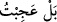
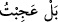
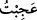
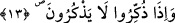
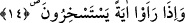

görme ve hoşnutluk mânâsında olur. “Kibirlenmeyen, yanlış ve günaha meyil ve
muhabbeti olmayan gençten Rabbiniz hoşnut, razı ve memnundur.”[200] hadisi bu
cümledendir.
Fethu’r-Rahmân’da der ki, hayret, Allah Teâlâ’nın hayret edilen şeyde ortaya
koyduğu beğeni yahut yermedir. Sonuçta insanlar bu nesneye yahut bu duruma hayret
ederler. Cüneyd-i Bağdâdî (k.s.)’ye bu âyet soruldu; o şöyle dedi: Allah Teâlâ hiç bir
şeye hayret etmez. Ancak o peygamberine muvâfakat etmiş ve şöyle buyurmuştur:
“(Resûlüm! Kâfirlerin seni yalanlamalarına) şaşıyorsan, asıl şaşılacak şey onların:
«Biz toprak olduğumuz zaman yeniden mi yaratılacağız?» demeleridir” (er-Râd
13/5). Yani durum senin dediğin gibidir, demektir. el-Müfredat’ta der ki: “Hayır, sen
şaşıyorsun. Halbuki onlar alay ediyorlar” sözünün mânâsı şudur: Sen dirilişin
hakikatini iyi bildiğin için onların dirilişi inkar etmelerine şaşırıyorsun; onlar ise câhil
oldukları için alay ediyorlar. Bazı kıraat alimleri bu âyeti ben şaştım hayret ettim
mânâsında “__WORD__ şeklinde ’nin zammesiyle okumuşlardır ki bunun izahı yukarıda
geçmiştir. Ancak bu Allah Teâlâ’nın şaşkınlık ve hayreti kendi zâtına nispet etmesi
demek değildir. Bilakis bu okuyuştaki mânâ bu durumda “__WORD__ denilir, şeklinde
ifade edilmiştir. Yahut burada “__WORD__ “Ben kabul etmiyorum, inkar ve reddediyorum”
demek olur ki Allah Teâlâ’nın “(Melekler) dediler ki: Allah’ın emrine şaşıyor
musun? Ey ev halkı! Allah’ın rahmeti ve bereketi sizin üzerinizdedir. Şüphesiz ki
O, övülmeye lâyıktır, iyiliği boldur.” (Hûd 11/73) kavli de bu kabildendir.
13. Kendilerine öğüt verildiği vakit öğüt almazlar.
Onların devam eden âdet ve alışkanlıkları “Kendilerine” herhangi bir şekilde “öğüt
verildiği vakit öğüt almazlar” Âyette şuna işaret edilmektedir. Onlar Allah’ı iyice
unutmuşlar; O’nu hiç hatırlamıyorlar. Hatta Allah Teâlâ kendilerine hatırlatılsa dahi
O’nu hatırlayamıyorlar demektir.
14. Bir mucize görseler alay ederler.
“Öldükten sonra diriliş vardır” diyenin doğruluğuna delâlet eden “Bir mucize
görseler alay ederler” ifadesi son derece alay ediyorlar yahut âyetle alay etmek için
birbirlerini çağırıyorlar demektir.